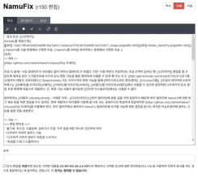

자기소개
안녕하세요! 소프트웨어 개발을 좋아하여 컴퓨터를 공부하고 있는 신연진입니다.
웹 프로그래밍을 취미로 하며, 프로그래밍으로 문제를 해결하는 것을 좋아합니다.
Typescript와 React를 이용한 풀스택 웹개발을 주로 하고 있습니다.
지금 보고 계신 이 포토폴리오는 https://yeonjin.name/portfolio에서도 보실 수 있습니다!
학력 및 병역
-
2022 ~ 2023
대한민국 공군 교육사령부
병장 만기전역, 정보체계관리 특기로 근무 -
2019 ~ 2024
중앙대학교 소프트웨어학부
학점: 4.3/4.5
프로젝트
-
2023


알고모여
알고리즘 스터디를 더 편리하게 할 수 있도록 하기 위해 만들어진 프로젝트로, 저는 프론트엔드를 담당했습니다.
이 프로젝트는 다음과 같은 기능을 제공하며, 현재 개발중입니다.- 스터디원의 과제풀이 여부 자동 확인
- 저장/불러오기/실행 기능이 있는 IDE
- 소스 코드의 공유 및 피드백 기능
-
2020


만화두레 홈페이지
중앙동아리 만화두레의 홍보를 위해 제작된 홈페이지입니다.
React, TypeScript, Node.js, MariaDB를 이용했으며, 만화두레 회원관리 시스템의 관리자 아이디로 로그인하여 홈페이지를 수정할 수 있습니다. -
2020
만화두레 회원관리 시스템
- https://github.com/ManhwaDure/manduid-backend
- https://github.com/ManhwaDure/manduid-frontend
- https://id.caumd.club
중앙동아리 만화두레의 회원관리 및 입부원서 모집을 위해 제작된 홈페이지입니다.
Vue, TypeScript, MariaDB, Node.js를 이용했으며 제공하는 기능은 다음과 같습니다.- 입부원서 접수 및 기록 보존
- 회원명부 관리 및 기록 보존
- 통합 인증 구현
- 권한 인수인계
-
2015 ~ 2019
NamuFix
나무위키의 편집과 관리를 편하게 해주는 웹 브라우저 확장 스크립트입니다.
오픈소스 소프트웨어로서 약 100개의 이슈를 해결했으며, 대략적으로 다음과 같은 기능을 가지고 있습니다.- 드래그-드롭 및 복사-붙여넣기를 통한 이미지 업로드나 임시저장 등 편집을 편리하게 해주는 기능 추가
- 즉시차단 링크, 일괄차단 링크 등 위키 관리를 편하게 해주는 기능 추가
- 토론 UI에 아이덴티콘을 추가하고 토론에서의 인용을 쉽게 볼 수 있게 하는 등 토론을 편리하게 해주는 기능 추가
어학 및 자격증
-
2023. 07.
OPIc IH
-
2022. 12.
정보처리산업기사
-
2020 .08.
TOEIC 810점
교내 활동
-
2023
동아리연합회 문화창작분과장
경선에서 당선되고 다음과 같은 활동을 했습니다.- 회의록 공개에 관한 자치령 제정을 통한 투명성 추구
- 합동전시회 "잇닿음제" 주최
-
2023
알고리즘 학회 ChAOS 부회장
소프트웨어학부 알고리즘 학회 ChAOS의 부회장직을 역임하며 다음과 같은 활동을 했습니다.
- 알고리즘 문제풀이 스터디 활동 운영
- 알고리즘 경진대회 스태프 참여
-
2020
만화두레 부회장
중앙동아리 만화두레의 부회장을 역임하며 다음과 같은 활동을 했습니다.
- 회계내역 작성, 동아리 관련 행정 및 사무
- 그림 스터디 활동 운영
- 동아리 홈페이지의 개발 및 유지보수
- 동아리 내부위키의 유지보수 (현재는 운영되지 않음)